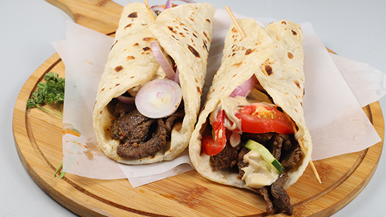

Beef Shawarma is a popular Middle Eastern dish made with marinated beef that is slow-cooked on a vertical rotisserie. The beef is typically seasoned with a blend of spices, including cumin, paprika, garlic, and turmeric, giving it a flavorful and aromatic taste. It's often served in a pita bread or flatbread wrap, along with fresh vegetables and tahini sauce.